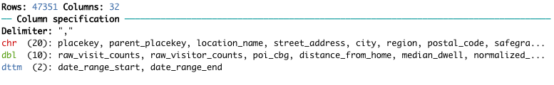

Updates: homework
- Do you understand your code?
- read_csv2()?
- Do not manipulate your data!
- What's your purpose taking this class?
- When you ask, don't send me your screen shot!
- Trouble with gz file?
Today: we will talk about string and time
String analysis
- A string is also known as a character vector in R
- The word "vector" here is important
- it hints at how strings are structured in R
- Vectors are ordered lists
- In R, we can locate or index, particular elements of a vector using numbers
- We can think of any string as a vector of letters, numbers and symbols
- '' or ""
- it hints at how strings are structured in R
- However, we cannot use a single bracket [ ] notation with character
> words <- "Try this out"
> words[3]
NA
> words[1]
[1] "Try this out"
R actually interprets this sentence as a one-element vector containing just that one string
- In order to get a substring of the string, need to use the str_sub() from the stringr library
- tidyverse library includes this
> str_sub(words, 1, 9)
[1] "Try this"
R actually interprets this sentence as a one-element vector containing just that one string
- Your data likely has columns names
> colnames(recent_grads)
[1] "Rank" "Major_code" "Major" "Total"
[5] "Men" "Women" "Major_category" "Sample_size"
[9] "Employed" "Full_time" "Part_time" "Full_time_year_round"
[13] "Unemployed" "Unemployment_rate" "Median" "College_jobs"
[17] "Non_college_jobs" "Low_wage_jobs"
Let's standardize the column names by lowercase letters
> str_to_lower(colnames(recent_grads))
[1] "rank" "major_code" "major" "total"
[5] "men" "women" "major_category" "sample_size"
[9] "employed" "full_time" "part_time" "full_time_year_round"
[13] "unemployed" "unemployment_rate" "median" "college_jobs"
[17] "non_college_jobs" "low_wage_jobs"
Guess: str_to_upper()
- One common string manipulation task is to take raw strings and remove unnecessary whitespace
- called trimming
- essential for web data
> padded_string <- " Brandeis "
[1] " Brandeis "
> str_trim(padded_string, side = "both")
[1] "Brandeis"
There are other times where we might want to perform the opposite of trimming, which is known as padding
> str_pad("Brandeis", width = 20, side = "both", pad = " ")
[1] " Brandeis "
- Sentences are treated as a single character vector
> sentence <- "Yeabin is a kind person."
In contrary, we see a sentence composed of multiple words
Instead of one long sentence, we would need a character vector where each element is an individual word
> str_split(sentence, " ")
[[1]]
[1] "Yeabin" "is" "a" "kind" "person."
What is the ouput data type?
> str_split(sentence, " ")[[1]]
[1] "Yeabin" "is" "a" "kind" "person."
> sentence_words <- str_split(sentence, " ")[[1]]
> sentence_words[1]
[1] "Yeabin"
> sentence_words[1:3]
[1] "Yeabin" "is" "a"
str_split() needs to be told what character it should split a sentence
- We might want to combine multiple words into one sentence
- call this operation string concatenation
- str_c() does this
> words <- c("String", "concatentation", "via", "function")
> str_c(words, collapse = " ")
[1] "String concatentation via function"
The collapse keyword is what tells R what character splits up the sentence
Another word for this is delimiter
In general, string splitting is a much more common operation than string concatenation
Let's have an exercise here. Take a look exercise.csv
Correct postal_code column here
> df <- read_csv("~location/exercise.csv")
> df <- df %>%
mutate(
postal_code = as.character(postal_code),
correct_postal_code = str_pad(postal_code,
width = 5, side = 'left',
pad = "0")
)
Now focus on date and time
R doesn't have a built-in data type for dates and times, but it has well established functions that smooth the process of using them
We'll use the lubridate package

- Distinguish between dates and times
- dates as time on longer scales, like years, months and days
- times refers to shorter scale of time, down to hours, minutes and seconds
- There are two main ways that dates and times can be represented in R
- The first way is through strings
- can be written in many different ways
- e.g.: "YEAR/MONTH/DAY"
> date1 <- "22/09/19"
> date2 <- "09-19-22"
These two strings refer to the same date, but are different representations of it
> ymd(date1)
[1] "2022-09-19"
> mdy(date2)
[1] "2022-09-19"
This process is called parsing a date
> date1 <- "22/09/19 13:30:00"
> date2 <- "09-19-2022 01-30 PM"
> ymd_hms(date1)
[1] "2022-09-19 13:30:00 UTC"
"UTC" at the end stands for Coordinated Universal Time
- it represents the time zone for the date and time
Possible to set the time zone
> mdy_hm(date2, tz = "America/New_York")
[1] "2022-09-19 13:30:00 EDT"
> Sys.timezone()
[1] "America/New_York"
- The second way is Unix time
- Unix time describes the number of seconds that have passed since January 1, 1970 at midnight in UTC
- In any case, Unix dates and times are always in reference to a starting date.
> now <- Sys.time()
> now %>% ymd_hms() %>% as.numeric()
[1] 1663614518
- When working with dates and times, we'll only need a single part of it
> date <- ymd("2022-09-19")
> year(date)
[1] 2022
> month(date)
[1] 9
> day(date)
[1] 19
> wday(date)
[1] 2022
> wday(date, label = TRUE)
[1] 9
> yday(date)
[1] 19
- A benefit to working with Unix time is that it makes calculating spans of time easier
> ymd("2020-04-21") - ymd("2020-04-20")
[1] Time difference of 1 days
- the actual calculation returns a number
- Since it is positive, we would interpret it as moving forward in time
> ymd_hms("2020-04-21 17:00:00") - ymd_hms("2020-04-21 08:30:00")
[1] Time difference of 8.5 hours